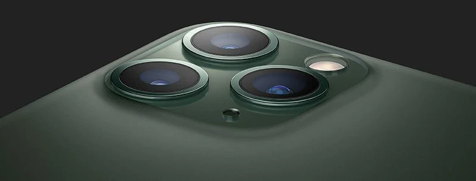

Made by: Namrata mishra
Apple iPhone 11 Pro Max smartphone runs on iOS v13.0 operating system. The phone is powered by Hexa Core (2.65 GHz, Dual core, Lightning + 1.8 GHz, Quad core, Thunder) processor. It runs on the Apple A13 Bionic Chipset. It has 4 GB RAM and 64 GB internal storage. Apple iPhone 11 Pro Max smartphone has a OLED display. It measures 158 mm x 77.8 mm x 8.1 mm and weighs 226 grams. The screen has a resolution of 1242 x 2688 pixels and 456 ppi pixel density. It has an aspect ratio of 19.5:9 and screen-to-body ratio of 84.19 %. On camera front, the buyers get a 12 MP f/2.2 Primary Camera(23 mm focal length) and on the rear, there's an 12MP + 12MP + 12MP camera with features like Auto Flash, Face detection, Touch to focus. It is backed by a 3969 mAh battery. Connectivity features in the smartphone include WiFi, Bluetooth, GPS, Volte, NFC and more.
Apple iPhone 11 Pro Max smartphone price in India is Rs 109,900. Apple iPhone 11 Pro Max was launched in the country onSeptember 20, 2019 (Official).The smartphone comes in 2 other storage and RAM variants - Apple iPhone 11 Pro Max 256GB, Apple iPhone 11 Pro Max 512GB. As for the colour options, the Apple iPhone 11 Pro Max smartphone comes in Gold, Silver, Space Grey, Midnight Green colours.
The iPhone 11 Pro, like the prior-generation iPhone XS, has an IP68 water resistance rating, but it is more water resistant. It is rated to survive a depth of four meters (13 feet) for up to 30 minutes, which is an improvement over the two meter rating in the XS and the two meter rating in the current iPhone 11. In the IP68 number, the 6 refers to dust resistance (and means the iPhone 11 Pro can hold up to dirt, dust, and other particulates), while the 8 pertains to water resistance. IP6x is the highest dust resistance rating that exists.
The iPhone 11 Pro and iPhone 11 Pro Max use a "Super Retina" XDR display, which Apple says is its best display ever in an iPhone. The Super Retina display features support for Dolby Vision, HDR10, and wide color gamut for unparalleled color accuracy.
The Super Retina display features vivid, true-to-life colors, deeper blacks, and, new this year, a 2,000,000:1 contrast ratio, up from 1,000,000:1.
Compared to a traditional LCD display, such as the display in the iPhone 11, the iPhone 11 Pro is noticeably higher quality, especially when it comes to highlights and shadows. Blacks are blacker, whites are whiter, and everything just looks more realistic and like it does in real life.
A triple-lens rear camera, a first for an iPhone, is the hallmark feature in the iPhone 11 Pro and Pro Max. There are telephoto and wide-angle lenses like before, along with a new ultra wide-angle camera lens.
Fast charging, an iPhone 11 Pro and Pro Max feature, allows the iPhones to charge to 50 percent power from dead in just 30 minutes using a higher power charger. For the first time, Apple is including the hardware needed for fast charging with the iPhone, so the iPhone 11 Pro and Pro Max charge up faster than ever.
Dual-SIM support, which allows two phone numbers to be used at one time, is included in the iPhone 11 Pro and Pro Max. Dual-SIM functionality is enabled through the inclusion of one physical nano-SIM slot and an eSIM. The eSIM feature is available in many countries around the world, and Apple has a full list of carriers that support eSIM on its website. Dual-SIMs work with select carriers in Austria, Canada, Croatia, Czech Republic, Germany, Hungary, India, Spain, the UK, and the United States.
The iPhone XS and XS Max had a glossy finish, but for the iPhone 11 and 11 Pro, Apple implemented a matte finish that looks more like a brushed glass.There are four colors this year: Silver, Space Gray, Gold, and Midnight Green. Midnight Green is a new color that Apple hasn't ever used before, and it's a deep, forest green shade that was made possible by ink techniques created by Apple supplier Seiko Advance.